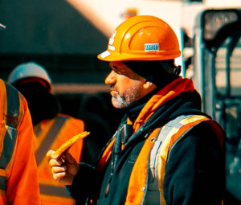

Target Audience
The ideal audience would be adults who want/need to check the weather frequently. They don’t have a lot of time to sift through lots of weather data, they just need to quickly check the main facts so they can be ready.
Personas
Jerry Conners
Jerry is a construction site supervisor and is outside all day. He works at different locations throughout the day and the weather can change a lot depending on where he is. He always wants to check the weather before he goes so he doesn’t get caught out in the rain or stuck in inclement weather with the wrong equipment. He also needs to tell his workers what kind of gear they are going to need and when they will need to shut down the work because of the weather. He wants something quick and easy to look at so he can tell right away what he would need to do since he is a busy man.
Jessica Hanson
Jessica is a stay at home mom with two little kids. Her main priority is her children and keeping them happy and safe. She takes them with her wherever she goes and often visits family out of town. The kids love playing outside and she still has to dress them whenever they go out. It takes more time to get her kids ready when the weather is bad and more time to clean up after them when they come back. She wants to make sure her kids are safe and she knows how to dress them appropriately.
Scenarios
- Is it supposed to rain today?
- How cold is it in the next city over?
- Is it going to be sunny at the beach today?
- When is this storm going to stop so we can get back to work?
- What will the weather be like when I’m visiting my relatives?